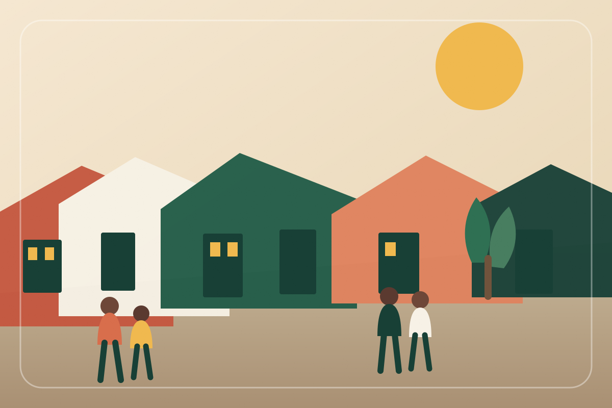
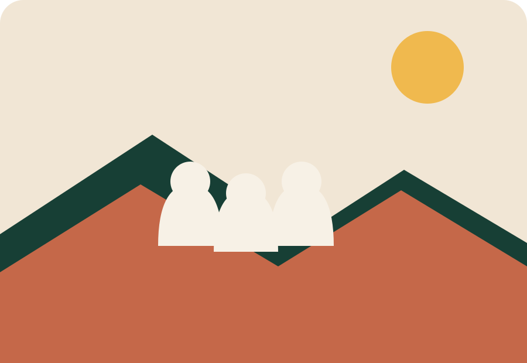
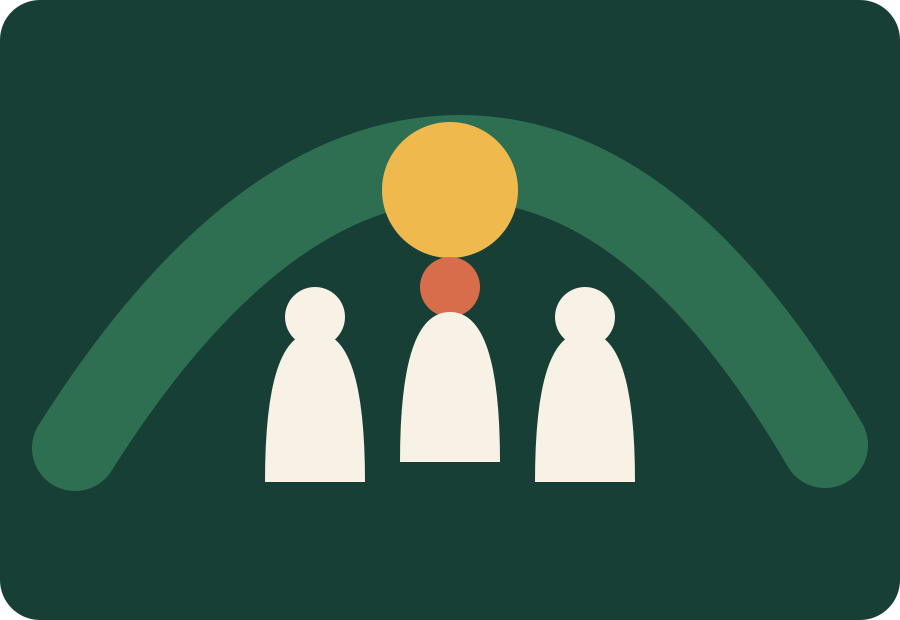
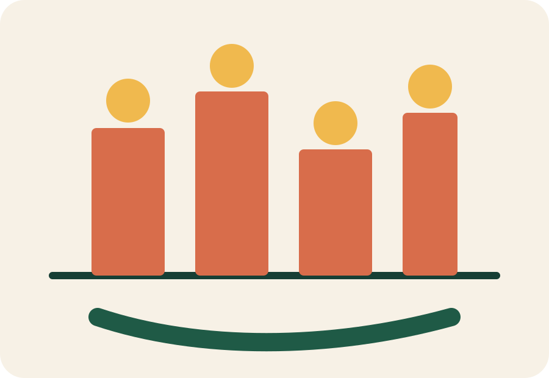

Proximidade
Informação clara e acessível, ligada às necessidades da comunidade.
Mafalala · Maputo
O Comitê de Zona de Mafalala é um espaço de organização e participação comunitária, criado para aproximar os membros, facilitar a comunicação e acompanhar as prioridades da zona.

Sobre o Comité
O Comitê de Zona de Mafalala foi criado com o objectivo de fortalecer a organização e a participação dos membros na comunidade. A sua actuação inclui mobilização, formação, intervenção comunitária e acompanhamento das preocupações da população.
O website traduz esse papel para o ambiente digital, dando à comunidade um ponto de referência simples para conhecer o Comité, acompanhar actividades e encontrar formas de participação.
Informação clara e acessível, ligada às necessidades da comunidade.
Uma ponte entre estruturas do Comité, membros e moradores da zona.
Mais espaço para ouvir, mobilizar e envolver a comunidade.
Missão e objectivos
A missão dá sentido à presença do Comité. Os objectivos tornam esse propósito visível através de acções concretas.
Fortalecer a organização comunitária, mobilizar e informar os membros, promover a participação e acompanhar as actividades e preocupações da zona.
Áreas de actuação
As principais frentes de trabalho estão organizadas para que qualquer pessoa perceba rapidamente onde e como o Comité actua.

Acções para informar os membros, reforçar a organização e estimular a participação na vida da zona.

Iniciativas que apoiam a aprendizagem, a participação dos jovens e a integração de diferentes grupos.

Escuta e seguimento das actividades e preocupações apresentadas pelos membros da comunidade.
Participação
Conheça o Comité, as suas áreas de actuação e os canais disponíveis.
Integre actividades, encontros e iniciativas de interesse da comunidade.
Envie sugestões, preocupações ou temas que mereçam acompanhamento.
Consulte informações, comunicados e futuras actualizações do Comité.
Utilize o website como ponto de contacto para partilhar uma sugestão, preocupação ou proposta de interesse para a zona.